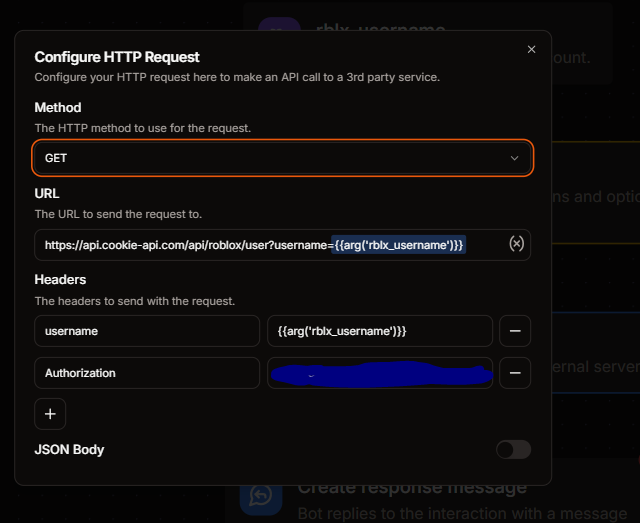
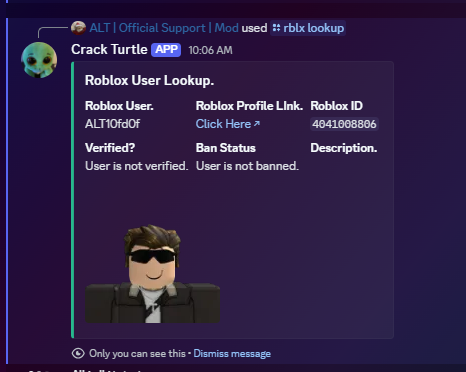

Roblox Account Lookup
Within this showcase I will teach you how to create a roblox lookup command that you can add to your bots. This command will be using things like API, so make sure to follow along very closely.
- Start off by going and adding a defer response block underneath of your command.
- Add an API block under that.
- Then, add an argument above the command set to the following settings.
Argument Name - rblx_username
Description - The username of the roblox account.
- Type - Text
- Argument required - Yes.
- Go and log into Cookie API and log in.
- Go to the sidebar and look for the section called API keys, and then click on the green "+ Create Key" button and then copy the key it gives you.
- Go to your API block and set to the following settings.
- HTTPS Method.
- Get
- URL
https://api.cookie-api.com/api/roblox/user?username={{arg('rblx_username')}}
- Headers.
Authorization | [Your cookie API key!]username | {{arg('rblx_username')}}
Left side is the Key, right side is the Value.

- Set the temporary value of the API block to be
api.
Listed below are the ways to get the certain information.
{{fromJSON(var('api').body()).username}}- Will output the roblox usernamehttps://www.roblox.com/users/{{fromJSON(var('api').body()).userid}}/profile- Will output a link to the users profile.{{fromJSON(var('api').body()).userid}}- Will output the user's ID.{{ fromJSON(var('api').body()).has_verified_badge ? "User is verified.." : "User is not verified." }}- Will output a different response depending on if the user has the verified badge.{{ fromJSON(var('api').body()).is_banned ? "User is banned." : "User is not banned." }}- Will output a different response based on if the user is banned from roblox or not.{{fromJSON(var('api').body()).description}}- Will output the user's roblox description.{{fromJSON(var('api').body()).user_avatar_picture}}- Will get the avatar picture of the roblox avatar.
